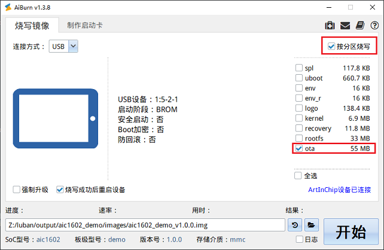

eMMC 平台测试指南
测试环境
- 硬件
-
开发板
-
- 软件
-
PC 端的串口终端软件，用于 PC 和开发板进行串口通信
-
HTTP 或 FTP 服务器，网络升级方式需要使用
FTP 服务器窗口如下所示：
注：编译两份份 OTA 升级包（Kernel 和 RootFS 不同），测试升级是否成功。
-
编译 OTA 升级包
执行 lunch d211_demo 命令进入主系统，执行 m 命令编译整个主系统，获得 Luban 镜像 OTA 升级包。
生成 OTA 升级包地址为 output/d211_demo/images/swupdate/d211_demo.swu。
post-image.sh 中 swupdate_pack_swu 函数用于编译生成 OTA 升级包。
本地升级方式
- 烧录 OTA 升级包到 OTA 分区
将 OTA 升级包拷贝到
target/d211/demo/ota目录中：cp ~/Luban/output/d211_demo/images/swupdate/d211_demo.swu ~/Luban/target/d211/demo/ota-
执行 m 命令，将
ota 分区镜像文件 ota.ext4 编译到 Luban 烧录镜像文件d211_demo_v1.0.0.img中。 -
通过 AiBurn 方式将 ota.ext4 单独烧录到
ota 分区中，如下图所示：
-
- 挂载 OTA 分区
重新上电，将
ota 分区挂载到 mnt/ota 目录下：/etc/swupdate_main start检查 OTA 升级包是否存在。mnt/ota 目录下默认存在 d211_demo.swu 和 this_is_a_test_file 两个文件。
- 主系统下启动升级命令
./usr/lib/swupdate/swupdate_cmd.sh -i /mnt/ota/d211_demo.swu -e stable,upgrade_recovery-
-i：本地升级文件的路径，根据具体路径配置。
-
e：需要升级的项目。
执行命令以后，整个升级过程自动执行完成。
-
SD 卡升级方式
-
将 OTA 升级包拷贝到 SD 卡根目录下。
-
插入 SD 卡，Luban 中会自动挂载 SD 卡。
-
执行下面命令启动 OTA 升级：
./usr/lib/swupdate/swupdate_cmd.sh -i /mnt/sdcard/d211_demo.swu -e stable,upgrade_recovery
网络升级方式
网络升级方式包含下列两种：
-
设备端为服务器，电脑为用户端。
-
设备端为用户端，电脑为服务器。
实际生产过程中，使用第二种方式
-
在启动脚本里面添加网络环境的配置。主系统和 Recovery 系统在启动时自动搭建好网络环境。
ifconfig eth0 up ifconfig eth0 192.168.1.200 -
主系统下启动升级命令
主系统自动联网完成，执行下列命令启动升级：
./usr/lib/swupdate/swupdate_cmd.sh -d -uftp://192.168.1.100/d211_demo.swu -e stable,upgrade_recovery如果搭建 HTTP 服务器，则执行下列启动命令：
./usr/lib/swupdate/swupdate_cmd.sh -d -uhttp://192.168.1.100/d211_demo.swu -e stable,upgrade_recovery
-
升级过程说明
升级过程会进行两次重启，参考 sw-description 和 swupdate_cmd.sh 文件。具体过程为：
-
运行主系统, 启动升级命令以后, 升级
recovery 分区、引导等。 -
重启，进入 Recovery 系统。
-
升级 Kernel、RootFS 等。
-
重启，进入主系统，升级完成。
具体参考 OTA 设计部分。
升级判断
从程序打印 log 差异和 RootFS 中文件差异判断当前运行的版本。Recovery 系统启动内核时打开了内核信息，主系统默认关闭, 通过内核打印信息可以判断程序执行在那个系统上。